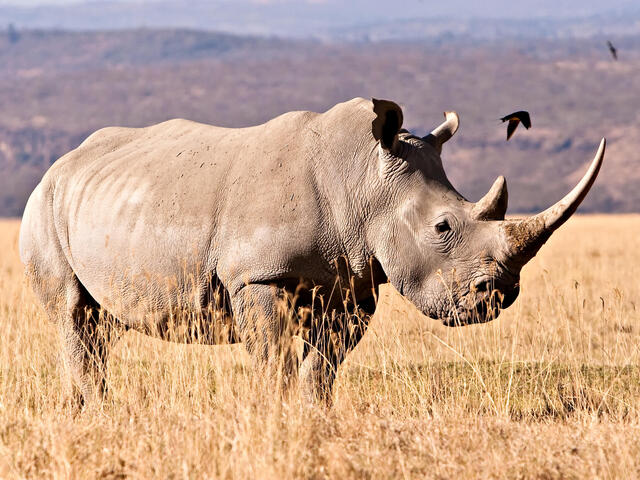

What Animals Will Extinct By 2100?
Learn about species that once roamed our planet and the factors that led to their extinction.
Rhinoceros
Currently, there are about 20,000 white rhinos in Africa, classified as Near Extinction according to the IUCN. Sadly, the last remaining wild population of the northern white rhino subspecies will soon become extinct, as only two females remain in captivity. Africa still has about 5,000 black rhinos, classified as Critically Endangered by the IUCN. The western black rhino subspecies were confirmed to be extinct in November 2011. Three species of rhino, black, Javan, and Sumatran, are also critically endangered. Today, a small population of Javan rhinos is found only in one national park on the northern tip of the Indonesian island of Java
Reason
Rhino poaching increased in the 1970s and 1980s due to the high demand for rhino horns in Asia and the Middle East. Rhino poaching is the biggest threat to rhino populations. Countries in East Asia and Southeast Asia still have a huge demand for rhino horns. They are said to be a panacea, as well as a symbol of power that many royal and noble individuals desire

Emperor Penguins
According to the British Antarctic Survey (BAS), large storms in 2017 and 2018 occurred continuously, claiming the lives of a series of young penguins in this area. Research by scientists from the Woods Hole Oceanographic Institute(US) shows that the number of individuals in emperor penguin populations will decline by at least 19% by 2100. About two-thirds of the current 45 emperor penguin populations are at risk of more than a 50% decline, and about one-fifth of the population faces “near extinction”, the research suggested. The reason being is due to global warming that is causing the ice area in Antarctica to decrease. Melting ice will affect the reproduction and rearing of emperor penguins since their activities mainly take place on sea ice. Moreover, melting ice also affects fish and krill, which are the main food of emperor penguins.
Reason
However, the degree of individual decline in emperor penguin populations varies. Penguin populations living in areas from the Eastern Weddell Sea to the Western Indian Ocean are most likely at risk of decreasing, while populations living in the Ross Sea will be less affected. Scientists are now calling for the emperor penguin to be listed as “endangered” (threatened from extinction) in the Red List of the IUCN. Concurrently, it has proposed the establishment of a marine reserve in the Ross Sea and off the eastern coast of Antarctica as a way to restrict tourism and fishing activities in this area in order to preserve the habitat of the species.

Sumatran Elephants
In 2011, the IUCN listed the Sumatran elephant as critically endangered and over the past two decades, the species population has decreased by about 35%, from about 2,652 to 1,724 individuals, according to information from WWF Indonesia
Reason
There are two main reasons that drive the Sumatran elephant to the brink of extinction. Firstly, due to the shrinking habitat; forests are being converted into residential areas, agricultural production, and plantations, which in turn often leads to deaths related to conflict and fragmentation of the elephant populations. Secondly, Sumatran elephants are still a target of poaching due to their tusks.